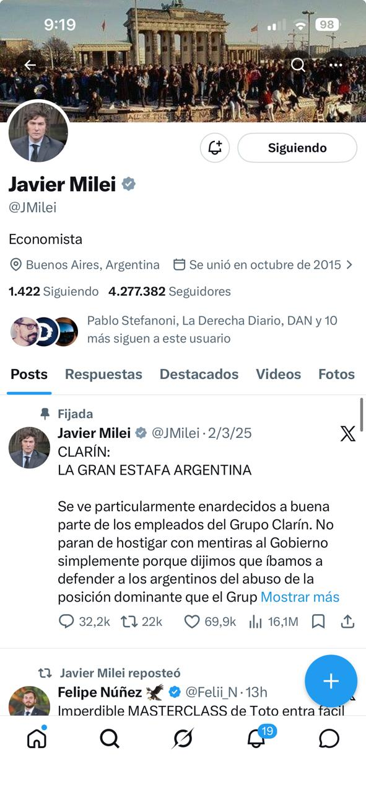

Êthos en el discurso digital
Lectura del cronograma: De la imagen analógica al discurso digital (2026): III.3, Gutiérrez Sanz.
¿Qué es el ethos?
El ethos es la imagen de sí que el enunciador construye en el discurso para volverse creíble, aceptable y digno de ser escuchado (o leído). No remite a su identidad real sino a la figura discursiva que el texto genera: un yo con ciertos rasgos, una presencia con cierta corporalidad y cierto tono.
Esta imagen puede ser mostrada (sugerida implícitamente a través de gestos, tono, vocabulario, etc.) o dicha (enunciada explícitamente, por ejemplo: “Soy una persona honesta”, “Como madre, sé de lo que hablo”). El ethos dicho no es obligatorio; el mostrado siempre está presente de alguna forma.
Importante: el ethos no es un retrato fidedigno del autor ni un perfil psicológico. Es una construcción que solo existe en la enunciación.
Tres tipos de ethos según su momento en el discurso
Ethos prediscursivo: Es la imagen previa que tenemos de alguien antes de que hable. “Conocemos” a una figura pública por su trayectoria, su rol social, su estilo, etc.
Ethos discursivo: Es la imagen que emerge a través del discurso. No depende de lo que ya sabemos, sino de cómo se organiza el discurso.
Ethos efectivo: Es la imagen que el receptor reconstruye finalmente, interpretando todo lo anterior.
Dimensión corporal e incorporación
Maingueneau señala que el discurso no es solo texto o palabra, sino también cuerpo, voz, tono y actitud. Por eso propone hablar de una “vocalidad del texto”: toda enunciación tiene una sonoridad, un ritmo, una manera de decir que genera una especie de imagen física de quién habla, una “presencia encarnada”. Incluso en lo escrito, el lector imagina una corporalidad y la asocia al enunciador.
El enunciatario (o co-enunciador) incorpora el ethos del discurso: construye una figura corporalizada, se relaciona con ese ethos desde sus propios esquemas culturales y afectivos, y se reconoce (o no) en ese universo simbólico. Ahí se juega la adhesión o el rechazo.
El ethos y la escena de enunciación
Para Maingueneau, el ethos es parte de la escena enunciativa, que se estructura en tres niveles:
Escena englobante: Tipo de discurso (político, religioso, educativo).
Escena genérica: Contrato de género (editorial, sermón, clase, panfleto).
Escenografía: Escena ficcionalizada que el discurso presupone y construye (por ejemplo, un político que habla “como padre de familia”).
La escenografía legitima al enunciador, pero también debe ser validada por su modo de hablar. El ethos circula y se reconfigura en esa dinámica.
Ethos social y ethos discursivo
La investigación sobre comunicación política digital distingue dos dimensiones complementarias:
Ethos social: la imagen que construye el perfil de un usuario en su conjunto (nombre de usuario, foto, banner, cantidad de seguidores, etc.). Funciona como presentación de credenciales antes de que el usuario-enunciador diga algo.
Ethos discursivo: la imagen que emerge del modo de escribir, del vocabulario elegido, del tono de los tuits, de las cuentas que se retuitea o comenta.
Ambas dimensiones se superponen y se retroalimentan: lo que el perfil “es” (ethos social) refuerza (o contradice) lo que el perfil “dice” (ethos discursivo), y viceversa.
Metodología: pasos para el análisis del ethos digital
A continuación se propone una secuencia de pasos de análisis aplicable a cualquier perfil político en X (ex Twitter).
| 1 | Presencia visual | ethos social / imagen Analizar el nombre de usuario (@handle) y nombre de perfil, la foto de avatar y la imagen de encabezado (banner). ¿Qué tipo de perfil proyectan? ¿Institucional, personal, combativo, simbólico? El banner suele funcionar como un argumento sin palabras, porque puede mostrar actos propios, lugares significativos o símbolos ideológicos que declaran un posicionamiento. |
|---|
| 2 | Biografía | ethos social / autopresentación Leer los hasta 160 caracteres de la bio. ¿Hay declaración de intenciones, adscripción ideológica, jerarquía de roles? ¿Qué se incluye y qué se omite? La economía o profusión de la bio es en sí misma un dato: quién usa todos los caracteres y quién no dice casi nada. |
|---|
| 3 | Estatus e influencia | ethos social / capital simbólico Registrar la relación seguidos/seguidores. Una ratio muy asimétrica (muchos seguidores, pocos seguidos) indica influencia; la simetría puede señalar estrategia de follow-back. La antigüedad del perfil también opera como capital simbólico de permanencia. |
|---|
| 4 | A quién sigue | ethos social / marco ideológico Explorar las cuentas seguidas: medios, partidos, figuras afines, qué tipos de personalidades se siguen (deportistas, artistas, empresarios, políticos, periodistas, académicos, etc.). El seguimiento es un acto de adhesión pública que construye un determinado posicionamiento. Vale la pena registrar si sigue a periodistas críticos, medios del exterior, figuras internacionales o solamente cuentas aliadas. |
|---|
| 5 | Léxico y estilo | ethos discursivo / enunciación Analizar el vocabulario y el registro (formal / coloquial / agresivo). ¿Qué imagen del “yo” construye el modo de escribir? El uso de mayúsculas, el manejo de la primera persona, la presencia o ausencia de signos de exclamación pueden ser indicadores del ethos discursivo. |
|---|
| 6 | Interacciones y menciones | ethos discursivo / relaciones ¿A quién retuitea, menciona o le pone “me gusta”? La interacción es una forma de adhesión pública que amplía y delimita el círculo ideológico del perfil. Las menciones antagónicas (atacar o ser atacado) también construyen ethos. Hoy el uso de hashtags disminuyó, pero las citas y los hilos siguen siendo instrumentos centrales de construcción del posicionamiento. |
|---|
| 7 | Tweet fijado | ethos discursivo / imagen elegida El tweet fijado es la primera pieza que lee cualquier visitante del perfil, funciona como una elección estratégica. Puede ser un discurso, una acusación, un logro, un elogio a un aliado, etc. Fijarlo significa decidir con qué imagen queremos ser asociados primero. |
|---|
Aplicación: análisis de perfiles
A continuación se analizan los elementos del perfil según los pasos metodológicos propuestos. Para los pasos 1 y 2 se trabaja a partir de la imagen del perfil disponible.
Nota: los pasos 4, 5 y 6 precisan el análisis de seguidores, tuits y retuits, tal como se realizó en clase. El paso 7 (tuit fijado) servirá, en este caso, para sintetizar el análisis de vocabulario + estilo (paso 5).
Perfil 1: Javier Milei (@JMilei)

| Paso 1: Avatar | Foto personal, traje, mirada directa a cámara. Proyecta seriedad institucional y liderazgo individual; no un cargo ni una institución, sino una persona-marca. La mirada directa evoca simultáneamente confrontación y transparencia. |
|---|
| Paso 1: Banner | Caída del Muro de Berlín (1989). Multitud sobre el muro. El muro como significante del fracaso del socialismo. No es una imagen de Argentina ni de su gestión, sino un símbolo ideológico global que ancla el perfil en una narrativa liberal-libertaria. Funciona como argumento antes de que el usuario lea una sola palabra. |
|---|
| Paso 2: Biografía | “Economista” Ocupa solo 10 de los 160 caracteres disponibles. La austeridad extrema es en sí un gesto de autoridad, porque connota que no necesita explicarse. Una sola palabra define toda una identidad. |
|---|
| Paso 3: Estatus | 4.277.382 seguidores / 1.422 siguiendo Ratio de casi 3.000:1. La asimetría es radical: su voz se amplifica sobre un auditorio masivo y él escucha (relativamente) poco. Construye la imagen de un líder de opinión, no de un par en conversación. |
|---|
| Paso 7: Tweet fijado | “CLARÍN: LA GRAN ESTAFA ARGENTINA” Uso de mayúsculas sostenidas (énfasis tipográfico agresivo), subjetivema axiológico negativo + nominalización acusatoria (“estafa”), señalamiento de un enemigo mediático concreto. El tuit fijado es la primera pieza que ve cualquier visitante, por lo que fijarlo en lógica de combate posiciona el perfil en denuncia permanente antes que en gestión. |
|---|
Síntesis del ethos de Milei
El ethos de Milei combina autoridad técnica (bio: “Economista”) con estilo confrontativo (léxico, mayúsculas, enemistad explícita). La tensión entre ambos es parte del efecto retórico: un experto que “dice lo que nadie se atreve”. El banner ideológico (la caída del Muro de Berlín) preencuadra cualquier lectura posterior de sus tuits en clave anti-estatista. La escenografía que construye es la del outsider que viene a decir una verdad que los demás políticos ocultan.
Perfil 2: Mauricio Macri (@mauriciomacri)
| Paso 1: Avatar | Primer plano, sonrisa, fondo neutro. Imagen de cercanía y accesibilidad. Contrasta con el traje formal y gesto serio de Milei: proyecta la imagen de un líder “amigable”, no confrontativo. |
|---|
| Paso 1: Banner | Selfie con multitud de jóvenes, todos sonriendo. El encabezado construye narrativa de conexión popular y juventud, no de historia ni ideología (como el muro de Milei). El “yo entre la gente” es el mensaje central del perfil. |
|---|
| Paso 2: Biografía | “Ex presidente de la República Argentina. Presidente del PRO. Casado. 4 hijos. Hincha de Boca”. Cinco datos en una bio, cada uno estratégico: cargo (autoridad institucional), partido (identidad política), estado civil e hijos (valores familiares), club (pertenencia popular). Gestiona simultáneamente dimensiones políticas, familiares y populares. |
|---|
| Paso 3: Estatus | 4.600.000 seguidores / 573 siguiendo. En X desde 2009. Ratio de ~8.000:1, incluso más asimétrico que Milei en términos relativos. La antigüedad del perfil (desde 2009) funciona como capital simbólico de permanencia institucional. |
|---|
| Paso 7: Tuit fijado (o más relevante) | “La mayoría de los argentinos hoy se expresó de forma contundente eligiendo el cambio y rechazando la continuidad. Felicito a Javier Milei por representar con valentía la voluntad de avanzar y prosperar que vive en el corazón de los argentinos”. Registro formal y mesurado. No hay mayúsculas ni injurias. La figura del “nosotros” implícito (“el corazón de los argentinos”) construye un ethos de representación colectiva. Macri fija un tweet de elogio a Milei (su competidor interno) lo que le permite quedar como arquitecto del éxito ajeno. Ethos de generosidad calculada. |
|---|
Síntesis del ethos de Macri
Macri construye un ethos institucional y de consenso: el estadista que celebra al otro, el líder que representa a “todos los argentinos”. Donde Milei es confrontativo, Macri abraza. La diferencia es tanto de estilo como de escenografía. Milei se presenta como el experto disruptivo que destruye al adversario; Macri como el político experimentado que une.
Cuadro comparativo
| Dimensión | Milei (@JMilei) | Macri (@mauriciomacri) |
|---|---|---|
| Avatar | Traje, mirada directa: seriedad confrontativa | Sonrisa, primer plano: cercanía y accesibilidad |
| Banner | Muro de Berlín: símbolo ideológico global | Selfie con jóvenes: conexión popular |
| Bio | “Economista” (1 dato, máxima austeridad) | 5 datos: cargo, partido, familia, club |
| Tweet fijado | Ataque a Clarín en mayúsculas. Ethos combativo. | Elogio a Milei. Éthos magnánimo, institucional. |
| Estilo discursivo | Agresivo, cargado de mayúsculas y acusaciones | Formal, mesurado, inclusivo |
Consignas
Analizá el ethos digital de uno de los siguientes perfiles utilizando la metodología de siete pasos propuesta arriba. Para cada perfil, elaborá:
Una descripción de los elementos visuales del perfil (avatar, banner, bio).
Un análisis del ethos social que emerge de esos elementos.
Un análisis del ethos discursivo a partir de al menos dos tuits recientes.
Una síntesis que articule ambas dimensiones y proponga una escenografía dominante.
Nicolás “Toto” Caputo @NicolasMCaputo Ministro de Economía del gobierno de Milei. Perfil técnico de bajo perfil mediático. |
|---|
Elisa “Lilita” Carrió @elisacarrio Fundadora de la Coalición Cívica. Uno de los ethos más singulares de la política argentina: oscila entre lo profético, lo moralista y lo confrontativo. |
|---|
Cristina Fernández de Kirchner @CFKArgentina Ex presidenta y ex vicepresidenta. Referente del kirchnerismo. Construye un ethos de resistencia con fuerte carga identitaria. |
|---|
Martín Tetaz @martintetaz Economista y diputado de la UCR. Perfil técnico en un partido de tradición democrática. |
|---|
Juan Grabois @JuanGrabois Dirigente social y político peronista. Léxico de la calle, apelaciones religiosas, confrontación directa. |
|---|
Facundo Manes @ManesF Neurólogo y político de la UCR. Ethos del experto científico que ingresa a la política. |
|---|
Recordatorio: el análisis del ethos no busca evaluar si el político es realmente como dice ser. Busca reconstruir la imagen que el discurso le propone al receptor. La tensión entre ethos social y discursivo puede ser tan reveladora como el análisis de cualquiera de los dos por separado.